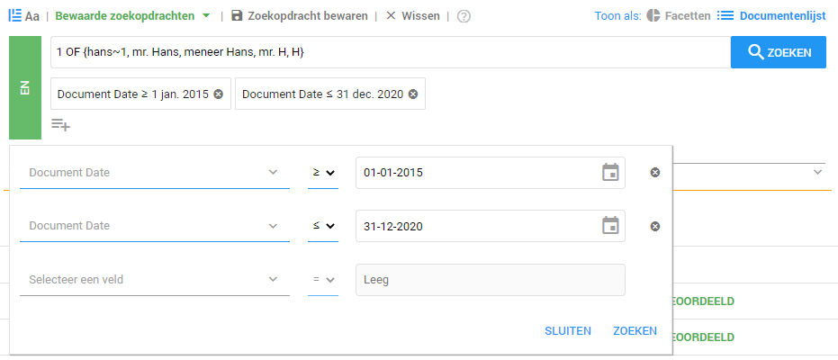

Data Doorzoeken
De geüploade datasets moeten vervolgens uitgezocht worden. Het doorzoeken en categoriseren van de data is belangrijk bij het proces van een informatieverzoek, inval of intern onderzoek. Door op de juiste manier de juiste zoekfuncties toe te passen is het makkelijk om alle relevante documenten te vinden. Deze relevante documenten kunnen worden gecategoriseerd door labels te gebruiken.
Zoekopdrachten
In ZyLAB ONE zijn er veel zoekmogelijkheden om uw zoekopdracht specifieker te maken. Voor het uitvoeren van een zoekopdracht kunt u gebruiken maken van de zoekbalk. U kunt een zoekopdracht invullen in de zoekbalk. Op deze manier kunt u bijvoorbeeld op zoek gaan naar bepaald persoon.
De zoekbalk
De zoekbalk ziet er als volgt uit:

-
Hier kunt u uw zoekopdracht invullen.
-
Hier kunt u een meta data filter toevoegen. Bijvoorbeeld zoeken op de datum dat een document aangemaakt is.
-
Hier kunt u een label toevoegen. Als u dit doet zult u alleen zoeken in de documenten die dit label hebben.
-
Hier kunt u kiezen of u wilt zoeken tussen de nog niet of juist wel beoordeelde documenten.
-
Hier kunt u uw opgeslagen zoekopdrachten terug zien.
-
Hier kunt u uw huidige zoekopdracht opslaan.
-
Hier kunt u uw zoekbalk mee leegmaken.
|

Als u wilt zoeken naar documenten die de naam van een bepaald persoon bevatten, kunt u bijvoorbeeld bovenstaande zoekopdracht gebruiken. Omdat een persoon op vele manieren kan worden aangeschreven in documenten is het belangrijk om zoveel mogelijk varianten in de zoekopdracht te benoemen.
Dit kan ook gedaan worden om een specifiek aantal behandelaren in documenten te vinden.
U wilt bijvoorbeeld dat er minimaal 2 behandelaren in de gevonden documenten voorkomen. U vult dan het volgende in de zoekbalk in:
2 of { dr. Grietje, dr. Frankenstein, dr. Raponsje, dr. V. Holle, dr. K. Duimpje, dr. Doornroosje, Dr. G. Kat, Dr. Belle, Dr. Beest, Dr. B. Baard, Dr. S. Zeeman}
Op deze wijze kunt u bijvoorbeeld ook medicijnen of medische behandelingen vinden.
De belangrijkste stap in het doorzoeken van data voor een informatieverzoek, inval of intern onderzoek is het vinden van Legal Privileged protected data, medische gegevens, persoonsgegevens en niet ter zaken doende gegevens. Nu alle varianten van documenten met de naam Grietje gevonden zijn moeten alle andere gegevens worden gekoppeld aan een bepaalde categorie van gegevens.
Het zoeken naar een diagnose behandelcode kan door gebruik te maken van reguliere expressies. Doordat een diagnose behandelcode eigenlijk altijd dezelfde soort opbouw heeft leent deze zich goed voor het zoeken met reguliere expressie.
Dit kunt u doen door bijvoorbeeld de volgende query te gebruiken:
15[a-e]{1}[0-9]{3} and 17[a-e]{1}[0-9]{3}
Wat hier eigenlijk staat is dat u documenten wilt zoeken die het volgende bevatten:
Codes beginnend met 15 of 17, daarna één letter die kan variëren tussen A en E en drie cijfers die kunnen variëren tussen de 0 en de 9.
Om documenten te kunnen vinden met meerdere behandelaren kunt u gebruik maken van de quorum search. Met de quorum search kunt u zoeken naar meerdere onderwerpen die minimaal in een document moeten voorkomen.
Zoeken op datum
Zodra u een grote hoeveelheid data door moet zoeken kan het handig zijn om gebruik te maken van een tijdsframe. Deze techniek zorgt ervoor dat alleen de documenten binnen een bepaald tijdsframe weergeven worden.
U krijgt als zorgaanbieder bijvoorbeeld een bezoek van de NZa en zij willen informatie over mr. Hans uit de periode 2015 t/m 2020. Via de functie 'Fields' kunt u kiezen welke field u wilt toevoegen. U doet dit doormiddel van het pijltje in de optie 'select a field' aan te klikken. Vervolgens kunt u een field naar keuze invoeren, zoals in dit geval 'document date'. Hierna kunt u een datum kiezen via het 'Selecteer een datum' icoontje . In het veld daaronder volgt u dezelfde stappen en vult u de gegevens van 2017 in. In de middelste knop kunt u kiezen voor kleiner dan, groter dan, is gelijk aan of is niet. Door hier een keuze in te vullen kunt u een tijdsframe instellen. Controleer goed of de data klopt die u heeft ingevuld, zodat uw tijdsframe correct is. Na het correct invullen van deze gegevens worden alleen de documenten in het door u gegeven tijdsframe weergegeven.
